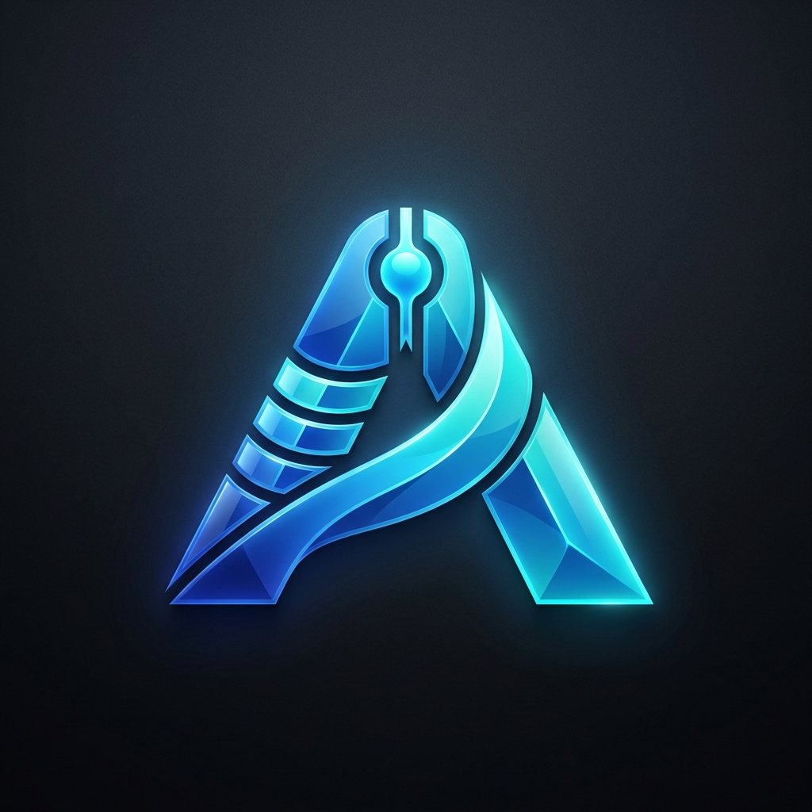

Consultazione DB Unico — Selexi
Hai ricevuto un link a una risorsa di Anita, il sistema interno di consultazione banca dati.
Per accedere è necessario essere connessi alla rete interna Selexi o alla VPN aziendale.
Non sei sulla rete interna?